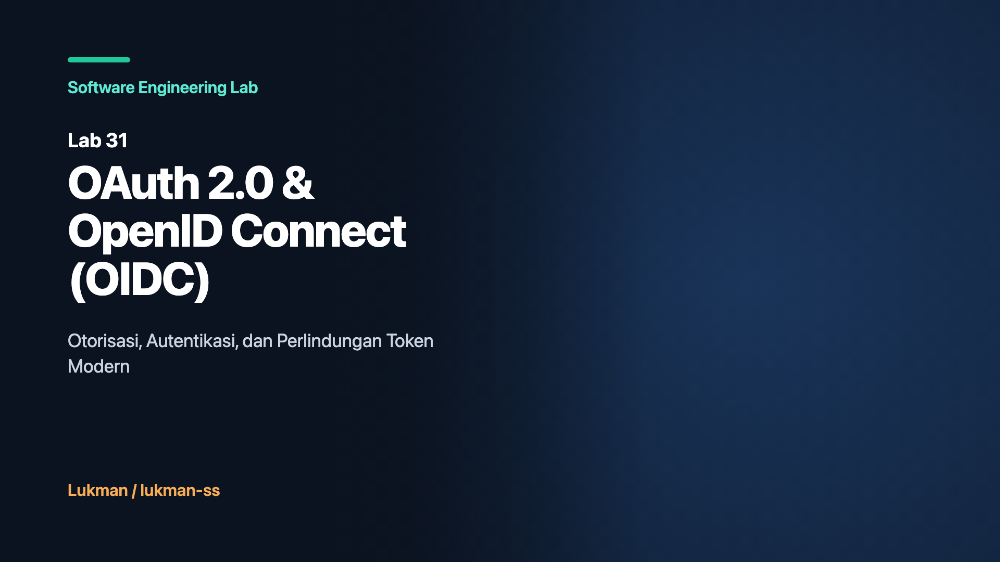

Dalam ekosistem rekayasa perangkat lunak modern, keamanan perimeter aplikasi berbasis web dan peramban (Single Page Application / SPA) bertumpu pada arsitektur pertukaran token. Kendati demikian, kebingungan antara konsep authentication (pembuktian siapa Anda) dan authorization (penentuan hak apa saja yang didelegasikan kepada Anda) masih menjadi salah satu celah kerentanan yang paling sering ditemukan dalam sistem produksi.
Protokol OAuth 2.0 dirancang secara spesifik oleh IETF (RFC 6749) sebagai kerangka kerja delegasi otorisasi. Ketika pengguna memberikan izin kepada aplikasi pihak ketiga untuk membaca kalender atau mengunduh berkas tanpa memberikan kredensial kata sandi utama, OAuth 2.0 menerbitkan access_token. Token akses ini dirancang sebagai bearer token yang buram (opaque) atau terstruktur bagi Resource Server, yang menyatakan: "Pemegang token ini memiliki cakupan izin tertentu selama durasi waktu tertentu." Token akses tidak pernah dirancang untuk membuktikan identitas pengguna kepada client.
Ketiadaan lapisan identitas pada OAuth 2.0 memicu lahirnya OpenID Connect (OIDC) Core 1.0. OIDC membangun identity layer di atas kerangka OAuth 2.0 dengan memperkenalkan artefak baru bernama id_token. Artefak ini berbentuk JSON Web Token (JWT) yang ditandatangani secara kriptografis oleh Authorization Server, memuat klaim terstandarisasi mengenai siapa subjek pengguna yang melakukan autentikasi, kapan autentikasi terjadi, serta ditujukan kepada client mana.
Seiring evolusi arsitektur web menuju client peramban publik yang tidak mampu menyimpan rahasia klien (client secret) secara aman, lanskap ancaman keamanan bergeser drastis. Serangan intersepsi kode otorisasi pada URL pengalihan (callback redirect) dan pencurian token melalui celah Cross-Site Scripting (XSS) menuntut standarisasi baru. Dokumen Best Current Practice RFC 9700 (pembaruan RFC 8725 / OAuth 2.1) secara eksplisit menghapus alur Implicit Grant dan mewajibkan penggunaan Authorization Code Flow yang dipadukan dengan Proof Key for Code Exchange (PKCE) S256 serta mekanisme Refresh Token Rotation dengan deteksi penggunaan ulang (replay detection).
Tanpa pemahaman batas arsitektur yang presisi, tim rekayasa perangkat lunak kerap terjebak ke dalam empat kegagalan fatal:
"alg": "none". Hal ini memungkinkan penyerang mengubah klaim subjek (sub) menjadi akun administrator dan memalsukan identitas sepenuhnya.
Arsitektur pertahanan Lab 31 dibangun di atas fondasi library standar Go tanpa dependensi pihak ketiga. Sistem membagi entitas menjadi empat domain:
+--------------------------------------------------------------------------------------------------+
| ALUR OAUTH 2.0 & OIDC DENGAN PKCE S256 |
+--------------------------------------------------------------------------------------------------+
[ Browser / Client ] [ Authorization Server & IdP ]
| |
| --- (1) Generate: code_verifier (entropy 32B), nonce, state ---------- |
| --- (2) Auth Request: code_challenge=S256(verifier), nonce, scope ---> |
| |
| Validasi Client |
| Simpan Challenge & Nonce
| <-- (3) Redirect callback: code (one-time, ttl 5m) ------------------- |
| |
| --- (4) POST /token: code + plain code_verifier ---------------------> |
| |
| Validasi PKCE: |
| S256(verifier) == stored_challenge
| Tandai Code: Used=true
| Terbitkan: |
| - at_ (Access Token)
| - id_token (Signed JWT)
| - rt_ (Refresh Token Family)
| <-- (5) Token Response ------------------------------------------------ |
| |
| === (6) Client Memverifikasi ID Token: |
| - Validasi HMAC-SHA256 signature |
| - Validasi iss, aud, exp, iat, dan nonce |
| |
[ Browser / Client ] [ Resource Server ]
| |
| --- (7) GET /api/profile (Header: Bearer at_...) --------------------> |
| |
| Verifikasi token & scope
| <-- (8) Data Profil Terlindungi --------------------------------------- |
| |
+--------------------------------------------------------------------------------------------------+
| MEKANISME ROTASI REFRESH TOKEN RFC 9700 |
+--------------------------------------------------------------------------------------------------+
[ Browser / Client ] [ Authorization Server & IdP ]
| |
| --- (9) POST /token/refresh: rt_old ---------------------------------> |
| |
| Cek status rt_old:
| Jika Revoked == true -> REPLAY!
| - Tandai FamilyID Compromised
| - Cabut semua token aktif
| - Tolak sesi
| Jika Belum Digunakan:
| - Tandai rt_old Revoked=true
| - Terbitkan rt_new (Family sama)
| - Terbitkan at_new
| <-- (10) Return: rt_new + at_new ------------------------------------- |
+--------------------------------------------------------------------------------------------------+
Implementasi sistem ini dibangun ke dalam modul terisolasi pada paket pkg/pkce, pkg/oidc, pkg/server, dan pkg/client.
Klien membangkitkan string acak dengan entropi kriptografis 256-bit (32 byte), lalu mengonversinya ke format Base64URL tanpa padding untuk membentuk code_verifier. Nilai code_challenge dihitung dengan mengambil intisari SHA-256 dari verifier tersebut.
package pkce
import (
"crypto/rand"
"crypto/sha256"
"encoding/base64"
"errors"
"fmt"
)
var (
ErrInvalidVerifierLength = errors.New("code_verifier must be between 43 and 128 characters")
ErrInvalidMethod = errors.New("unsupported code_challenge_method: only S256 and plain supported")
ErrChallengeMismatch = errors.New("code_verifier does not match code_challenge")
)
type PKCEPair struct {
CodeVerifier string
CodeChallenge string
Method string
}
func GeneratePKCEPair(method string) (*PKCEPair, error) {
if method != "S256" && method != "plain" {
return nil, ErrInvalidMethod
}
buf := make([]byte, 32)
if _, err := rand.Read(buf); err != nil {
return nil, fmt.Errorf("failed to generate random verifier: %w", err)
}
verifier := base64.RawURLEncoding.EncodeToString(buf)
challenge, err := ComputeChallenge(verifier, method)
if err != nil {
return nil, err
}
return &PKCEPair{
CodeVerifier: verifier,
CodeChallenge: challenge,
Method: method,
}, nil
}
func ComputeChallenge(verifier string, method string) (string, error) {
if len(verifier) < 43 || len(verifier) > 128 {
return "", ErrInvalidVerifierLength
}
switch method {
case "S256":
h := sha256.Sum256([]byte(verifier))
return base64.RawURLEncoding.EncodeToString(h[:]), nil
case "plain":
return verifier, nil
default:
return "", ErrInvalidMethod
}
}
func Verify(verifier string, challenge string, method string) error {
expected, err := ComputeChallenge(verifier, method)
if err != nil {
return err
}
if expected != challenge {
return ErrChallengeMismatch
}
return nil
}
ID Token dibentuk dengan tiga segmen: Header, Claims, dan Signature. Pada sisi Relying Party, verifikasi tanda tangan dilakukan menggunakan algoritma HMAC-SHA256 dengan fungsi pembanding waktu konstan (hmac.Equal) untuk mengeliminasi serangan timing side-channel.
package oidc
import (
"crypto/hmac"
"crypto/sha256"
"encoding/base64"
"encoding/json"
"errors"
"fmt"
"strings"
"time"
)
var (
ErrMalformedJWT = errors.New("malformed jwt: expected three dot-separated segments")
ErrSignatureInvalid = errors.New("jwt signature verification failed")
ErrIssuerMismatch = errors.New("id_token issuer mismatch")
ErrAudienceMismatch = errors.New("id_token audience mismatch")
ErrTokenExpired = errors.New("id_token has expired")
ErrNonceMismatch = errors.New("id_token nonce mismatch")
ErrIssuedInFuture = errors.New("id_token issued at time is in the future")
)
type IDTokenClaims struct {
Issuer string `json:"iss"`
Subject string `json:"sub"`
Audience string `json:"aud"`
Expiration int64 `json:"exp"`
IssuedAt int64 `json:"iat"`
Nonce string `json:"nonce,omitempty"`
}
func SignIDToken(claims IDTokenClaims, secret []byte) (string, error) {
header := struct {
Alg string `json:"alg"`
Typ string `json:"typ"`
}{Alg: "HS256", Typ: "JWT"}
hBytes, _ := json.Marshal(header)
cBytes, _ := json.Marshal(claims)
unsignedToken := fmt.Sprintf("%s.%s",
base64.RawURLEncoding.EncodeToString(hBytes),
base64.RawURLEncoding.EncodeToString(cBytes),
)
mac := hmac.New(sha256.New, secret)
mac.Write([]byte(unsignedToken))
sig := mac.Sum(nil)
return fmt.Sprintf("%s.%s", unsignedToken, base64.RawURLEncoding.EncodeToString(sig)), nil
}
func ParseAndVerifyIDToken(rawJWT string, secret []byte, expectedIssuer, expectedAudience, expectedNonce string, now time.Time) (*IDTokenClaims, error) {
parts := strings.Split(rawJWT, ".")
if len(parts) != 3 {
return nil, ErrMalformedJWT
}
unsignedToken := fmt.Sprintf("%s.%s", parts[0], parts[1])
sig, err := base64.RawURLEncoding.DecodeString(parts[2])
if err != nil {
return nil, ErrMalformedJWT
}
mac := hmac.New(sha256.New, secret)
mac.Write([]byte(unsignedToken))
expectedSig := mac.Sum(nil)
if !hmac.Equal(sig, expectedSig) {
return nil, ErrSignatureInvalid
}
claimsBytes, err := base64.RawURLEncoding.DecodeString(parts[1])
if err != nil {
return nil, ErrMalformedJWT
}
var claims IDTokenClaims
if err := json.Unmarshal(claimsBytes, &claims); err != nil {
return nil, ErrMalformedJWT
}
if claims.Issuer != expectedIssuer {
return nil, fmt.Errorf("%w: expected %s, got %s", ErrIssuerMismatch, expectedIssuer, claims.Issuer)
}
if claims.Audience != expectedAudience {
return nil, fmt.Errorf("%w: expected %s, got %s", ErrAudienceMismatch, expectedAudience, claims.Audience)
}
unixNow := now.Unix()
if claims.Expiration <= unixNow {
return nil, ErrTokenExpired
}
if claims.IssuedAt > unixNow+300 {
return nil, ErrIssuedInFuture
}
if expectedNonce != "" && claims.Nonce != expectedNonce {
return nil, fmt.Errorf("%w: expected %s, got %s", ErrNonceMismatch, expectedNonce, claims.Nonce)
}
return &claims, nil
}
Authorization Server menyimpan state token dalam memori dengan sinkronisasi sync.RWMutex. Kunci pertahanan rotasi terletak pada pelacakan FamilyID. Ketika sebuah refresh token digunakan, statusnya diubah menjadi Revoked = true, dan token baru dalam keluarga yang sama diterbitkan. Jika token yang sudah dicabut digunakan kembali, server mendeteksi anomali penyerangan dan menandai seluruh keluarga token dalam revokedFams, sehingga mematikan sesi penyerang maupun korban secara seketika.
func (s *AuthorizationServer) Refresh(refreshToken, clientID string) (*TokenResponse, error) {
s.mu.Lock()
defer s.mu.Unlock()
meta, exists := s.refreshMeta[refreshToken]
if !exists {
return nil, ErrRefreshTokenNotFound
}
// Deteksi apakah keluarga token ini sudah pernah compromised
if s.revokedFams[meta.FamilyID] {
return nil, ErrTokenReplayDetected
}
// Refresh Token Rotation: Jika token sudah pernah dipakai, terdeteksi REPLAY!
if meta.Revoked {
s.revokedFams[meta.FamilyID] = true
return nil, ErrTokenReplayDetected
}
if meta.ClientID != clientID {
return nil, ErrUnauthorizedClient
}
if time.Now().After(meta.ExpiresAt) {
return nil, ErrInvalidGrant
}
// Hanguskan token yang baru saja dikonsumsi
meta.Revoked = true
// Terbitkan token pengganti dalam satu FamilyID yang sama
newRtBytes := make([]byte, 24)
rand.Read(newRtBytes)
newRefreshToken := "rt_" + hex.EncodeToString(newRtBytes)
s.refreshMeta[newRefreshToken] = &RefreshTokenMeta{
FamilyID: meta.FamilyID,
Subject: meta.Subject,
ClientID: meta.ClientID,
Scope: meta.Scope,
Revoked: false,
ExpiresAt: time.Now().Add(30 * 24 * time.Hour),
}
// Terbitkan access token baru
atBytes := make([]byte, 24)
rand.Read(atBytes)
newAccessToken := "at_" + hex.EncodeToString(atBytes)
s.tokens[newAccessToken] = &AccessTokenMeta{
Subject: meta.Subject,
Scope: meta.Scope,
ExpiresAt: time.Now().Add(1 * time.Hour),
}
return &TokenResponse{
AccessToken: newAccessToken,
TokenType: "Bearer",
ExpiresIn: 3600,
RefreshToken: newRefreshToken,
Scope: meta.Scope,
}, nil
}
Integritas arsitektur diverifikasi melalui 17 unit test menyeluruh pada berkas tests/oauth_test.go dan eksekusi skenario serangan pada program peraga cmd/demo/main.go. Seluruh pengujian berjalan mulus dan bersih dari race condition saat diuji menggunakan Go Race Detector.
$ go test -v ./...
=== RUN TestPKCE_S256_Valid
--- PASS: TestPKCE_S256_Valid (0.00s)
=== RUN TestPKCE_InvalidMethod
--- PASS: TestPKCE_InvalidMethod (0.00s)
=== RUN TestPKCE_Mismatch
--- PASS: TestPKCE_Mismatch (0.00s)
=== RUN TestOIDC_IDToken_Valid
--- PASS: TestOIDC_IDToken_Valid (0.00s)
=== RUN TestOIDC_IDToken_TamperedSignature
--- PASS: TestOIDC_IDToken_TamperedSignature (0.00s)
=== RUN TestOIDC_IDToken_Expired
--- PASS: TestOIDC_IDToken_Expired (0.00s)
=== RUN TestOIDC_IDToken_MismatchClaims
--- PASS: TestOIDC_IDToken_MismatchClaims (0.00s)
=== RUN TestOAuth2_FullFlowAndPKCEInterception
--- PASS: TestOAuth2_FullFlowAndPKCEInterception (0.00s)
=== RUN TestOAuth2_RefreshTokenRotation_AndReplayDetection
--- PASS: TestOAuth2_RefreshTokenRotation_AndReplayDetection (0.00s)
=== RUN TestPKCE_Plain_Method
--- PASS: TestPKCE_Plain_Method (0.00s)
=== RUN TestOIDC_MalformedJWT
--- PASS: TestOIDC_MalformedJWT (0.00s)
=== RUN TestOAuth2_NegativePaths
--- PASS: TestOAuth2_NegativePaths (0.00s)
=== RUN TestOIDC_IDToken_IssuedInFuture
--- PASS: TestOIDC_IDToken_IssuedInFuture (0.00s)
=== RUN TestPKCE_VerifierLength_Bounds
--- PASS: TestPKCE_VerifierLength_Bounds (0.00s)
=== RUN TestOAuth2_ExpiredAuthCode_And_ExpiredTokens
--- PASS: TestOAuth2_ExpiredAuthCode_And_ExpiredTokens (0.00s)
=== RUN TestOAuth2_ConcurrentRefreshReplay
--- PASS: TestOAuth2_ConcurrentRefreshReplay (0.00s)
=== RUN TestOAuth2_ConcurrencyAndRace
--- PASS: TestOAuth2_ConcurrencyAndRace (0.00s)
PASS
ok labs/31-oauth2-and-oidc/tests 0.317s
$ go test -race ./...
ok labs/31-oauth2-and-oidc/tests 1.366sProgram peraga menjalankan alur nyata mulai dari pembentukan pasangan tantangan PKCE hingga pemblokiran simulasi intersepsi dan replay:
=== LAB 31: OAuth 2.0 & OpenID Connect (OIDC) Demo ===
[Step 1] Initiate Authorization Request with PKCE & OIDC scope...
Generated PKCE code_challenge (S256): dbNVgXttw5HU018kaBwk3JusvwqMVanN4c4ghBsH88w
Generated OIDC nonce: 2152fa0c9254b322d11b27dba96b99de
[Step 2] Authorization Server issues Authorization Code...
Issued Code: 5fabbdcdb6bbd582c3811481395a5161 (expires: 15:31:47)
[Step 3] Client exchanges Code + code_verifier for Tokens...
Access Token : at_4e8dd945eaf2aed814aaf9717a7ee6bab364db0914917bb2
Refresh Token: rt_c624781adb52c6effa11d85bbe24fccf7f73eb20feeaf928
ID Token : eyJhbGciOiJIUzI1NiIsInR5cCI6Ik...
[Step 4] Validate OIDC ID Token claims...
ID Token Subject : user_alice_99
ID Token Issuer : https://auth.example.com
ID Token Audience : spa-client-123
ID Token Nonce Match: SUCCESS (2152fa0c9254b322d11b27dba96b99de)
[Step 5] Access Resource Server using Access Token...
Resource Server verified Access Token. Subject: user_alice_99
[Step 6] Test Interception Attack (Attempt code exchange with wrong verifier)...
Interception Attack Blocked! Error: pkce verification failed: code_verifier does not match code_challenge
[Step 7] Test Refresh Token Rotation...
Rotated New Access Token : at_8c8facd2a7dce0b35b74243d16172970a30c4e94f05853bd
Rotated New Refresh Token: rt_a0aafd72efbf3ffb2f3cfafeacf71cf4d4e6503170fee590
[Step 8] Test Refresh Token Replay Detection (Attacker reuses stolen Refresh Token)...
Refresh Token Replay Detected! Error: refresh token reuse detected: entire token family revoked
Re-testing active refresh token after family revocation...
Active session revoked due to family revocation! Error: refresh token reuse detected: entire token family revoked
=== Demo Completed Successfully ===Tabel berikut merangkum evolusi keamanan dari pola implementasi otentikasi lama menuju standar modern berbasis RFC 9700 dan OIDC Core:
| Dimensi Arsitektur | Pola Tradisional / Rawan (Before) | Standar Modern Lab 31 (After) |
|---|---|---|
| Pembuktian Identitas | Menggunakan Access Token OAuth 2.0 mentah yang buram tanpa validasi audiens. | Menggunakan OIDC ID Token terstruktur dengan verifikasi kriptografis lengkap (iss, sub, aud, exp, nonce). |
| Pencegahan Intersepsi Kode | Alur otorisasi standar tanpa PKCE; rentan terhadap pencurian kode redirect URI. | Wajib PKCE S256 (RFC 7636 / RFC 9700); penukar kode wajib membuktikan kepemilikan code_verifier asli. |
| Siklus Hidup Refresh Token | Refresh token statis berumur panjang tanpa rotasi; satu kebocoran memberikan akses abadi. | Refresh Token Rotation sekali pakai; setiap pembaruan menerbitkan token baru dan mematikan token lama. |
| Penanganan Replay Token | Server tidak melacak riwayat penggunaan token yang sudah mati; replay diterima. | Lineage tracking via FamilyID; pemakaian token mati mencabut paksa seluruh token aktif dalam keluarga. |
| Resiliensi terhadap XSS | Menyimpan token di localStorage peramban; rentan disedot skrip injeksi. |
Penyimpanan terisolasi dalam memori runtime atau cookie HTTPOnly Secure SameSite via pola BFF. |
| Mitigasi Replay ID Token | Client menerima JWT tanpa memeriksa parameter acak sekali-pakai. | Pencocokan nilai nonce kriptografis antara inisiasi permintaan dan payload ID Token. |
Tidak ada keputusan rekayasa perangkat lunak tanpa trade-off. Memahami kompromi dari desain ini sangat esensial sebelum mengadopsinya ke lingkungan produksi berskala masif:
ConstantTimeCompare) pada pembandingan string tantangan PKCE tidak diimplementasikan secara penuh pada level paket PKCE (hanya pada signature HMAC OIDC), serta validasi parameter state dilakukan pada sisi client tanpa pencatatan sesi server.
Terapkan pola Authorization Code Flow dengan PKCE S256 dan Refresh Token Rotation pada skenario berikut:
Hindari pola ini jika Anda hanya membangun komunikasi antar-layanan tertutup (server-to-server) di dalam jaringan privat tanpa keterlibatan pengguna akhir. Pada kasus machine-to-machine murni, gunakan alur Client Credentials Grant (RFC 6749 Section 4.4) dengan mTLS (Mutual TLS) atau private key JWT.
labs/31-oauth2-and-oidccf0cd90745a547032e8fb3a2cb838f40db1de30a